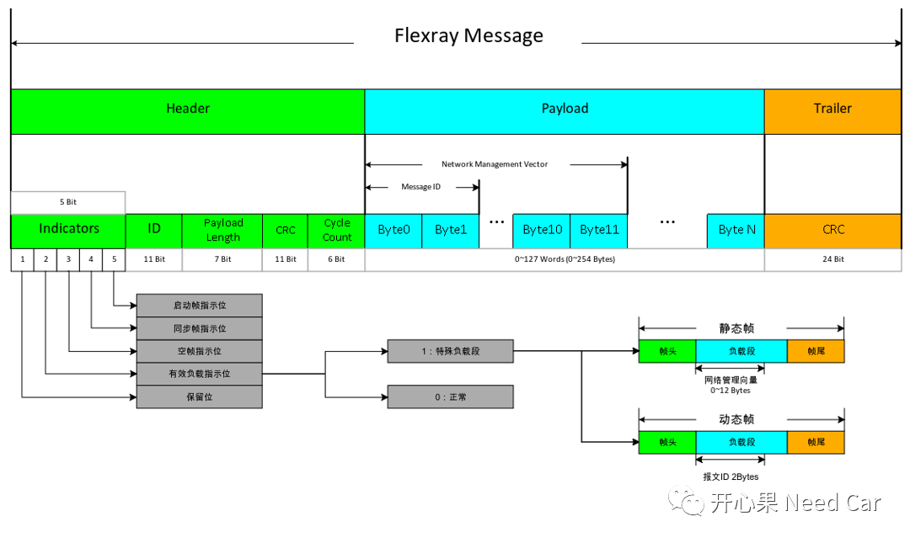
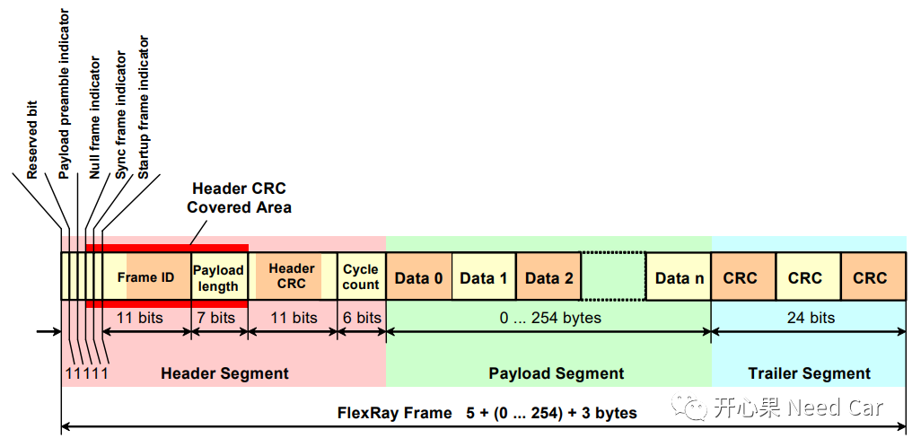
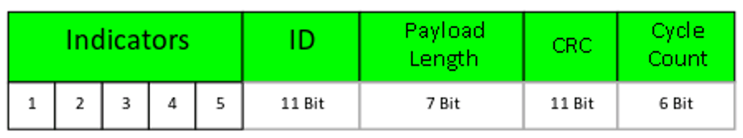
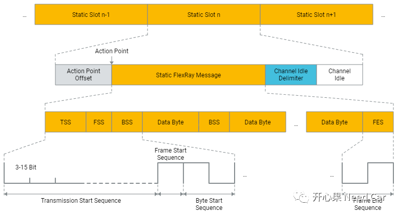
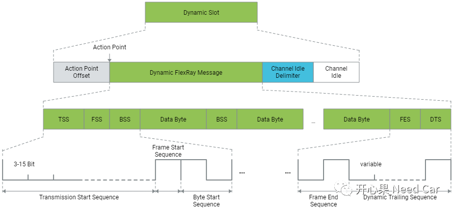

开心果 Need Car · 2022-02-18T20:00:00+08:00 · 微信原文
Flexray报文包含：帧头、有效负载、帧尾三部分组成。如下所示：

Flexray的Frame结构如下所示：

提示：参考《FlexRayCommunicationSystem V2.1》
帧头共由40个Bit构成（5 Byte），具体包括：Indicators、ID、Payload Length、CRC、Cycle Count。
1、Indicators
该bit = 1，所有的接收节点要进行同步处理；
该bit = 0，接收节点不做同步处理。
该bit = 1，此静态Frame是启动Frame，规范中要求只有冷启节点同步帧置位时，启动指示位才能置位，即Bit4 = Bit5 = 1；
该bit = 0，此静态Frame不是启动帧。
2、ID
ID由11 Bit表示。ID标识报文，并与时隙相对应，0x00表示无效报文（接收节点进行错误处理），所以有效ID范围是1~2047（2^11）。
3、Payload Length
Payload Length由7 bit构成，表示负载段数据的大小（以word为单位）。一条报文最多可以传输254 byte，即最大Payload Length(cPayloadLengthMax) = 127（2^7）。
在静态段中，同一Cycle中所有的Frame负载长度是固定的，即长度一致，比如都是32 byte，一般可配置gPayloadLengthStatic参数。
4、CRC
CRC序列由11Bit构成（这里的CRC是Header的CRC），该序列的计算基于ID、Payload Length、同步帧指示符(Bit4)和启动帧指示符(Bit5)。

5、Cycle Count
帧头的最后是周期计数器，由6个bit构成，表示报文发送的周期数。周期计数器的范围是0到63。
帧尾是24 Bit的CRC计算域，计算的范围包括帧头和有效负载，如下所示：


往期精彩回顾